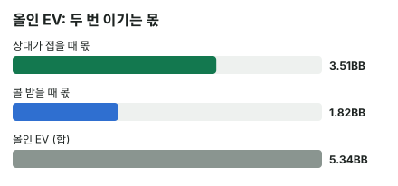

안녕하세요. A21에서 드로우로 턴에 한 번 더 걸 때, 콜을 받아도 에퀴티가 남아서 본전 폴드율이 내려가는 걸 봤죠.
오늘은 그 생각에 이름을 붙여요. 세미블러프 = 지금은 지는 핸드지만, 카드가 오면 이기는 드로우로 거는 벳이에요. 그리고 이번엔 올인이라 뒤에 베팅이 없어요. A21에서는 폴드율로만 판정했지만, 오늘은 EV를 금액으로 끝까지 계산할 수 있어요.
이 글에서 배울 것
- 세미블러프가 이기는 두 길(상대가 접어서 / 콜 받고 카드가 와서)을 EV 식의 두 몫으로 나누는 법
- 올인 EV를 0이 아니라 체크했을 때 몫과 비교해야 하는 이유, 그리고 두 숫자의 기준점
- 드로우가 강할수록 폴드에 덜 기대고, 약할수록 폴드에 더 기대게 되는 이유
오늘의 장면
토너먼트, 유효 스택 20BB. BTN이 2.5BB 오픈, Hero(BB) 콜. 플랍 팟 5.5BB, Hero 남은 스택 20 − 2.5 = 17.5BB.
Hero (BB)


플랍 


Hero는 넛 플러시 드로우(하트가 한 장 더 오면 A 하이 플러시)에, 보드보다 높은 오버카드 두 장(A·J)이에요. 지금 쇼다운하면 A 하이라 페어 하나에도 져요.
Hero가 먼저 17.5BB 올인하는 장면으로 단순화할게요. 체크한 뒤 상대 벳에 레이즈 올인하는 선도 있지만 오늘 계산에는 넣지 않아요.
결론부터 말할게요. 오늘 가정에서는 A♥J♥ 올인(약 +5.34BB)이 체크(약 3.8BB)보다 낫습니다. 올인이라 이 숫자가 최종 결과예요.
1단계. 세미블러프는 "보험 든 도전"
두 길로 이겨요
순수 블러프는 이기는 길이 하나예요. 상대가 접는 것. 콜을 받으면 끝이죠.
세미블러프는 길이 두 개예요.
- 첫 번째 길: 상대가 접으면 지금 팟을 바로 가져와요
- 두 번째 길: 상대가 콜해도 턴·리버에 하트나 A·J가 오면 이겨요
비유하면 보험 든 도전이에요. 상대가 물러나면 바로 이기고, 맞서 와도 보험(드로우)이 남아 있죠. 제목의 "두 번 이긴다"가 이 뜻이에요.
2단계. 상대 레인지 (가정)
| 상대 대응 | 핸드 |
|---|---|
| 콜 | TT+, 77, 22, AT, KT, QT, JT, T9s, 하트 두 장 플러시 드로우 전부 |
| 폴드 | 33-66, 88, 99, A2s-A9s, KQ, KJ, QJ, 98s, 87s, 76s, 65s, A2o-A9o (폴드 칸 핸드 중 하트 두 장 콤보는 플러시 드로우라 콜 쪽으로 셈) |
팟의 세 배가 넘는 올인이라, 상대는 T 페어 이상(셋 포함)과 플러시 드로우로만 콜한다고 가정해요(솔버 결과 아님).
💡 빨리 세는 팁: 셋은 보드에 같은 숫자가 한 장씩이라 남은 3장 중 2장 → TT·77·22 각각 3, 합쳐서 3 + 3 + 3 = 9. 그리고 Hero가 A♥·J♥를 쥐고 있어서 상대에게는 A♥x♥·J♥x♥ 콤보가 없어요(블로커)
콜 100콤보, 폴드 177콤보.
상대 폴드율 = 177 ÷ 277 = 약 63.9%
3단계. 첫 번째 길만 보면: 알파
알파 = 콜 받으면 늘 진다고 칠 때, 상대가 접어야 하는 최소 비율이에요(A01).
알파 = 17.5(올인) ÷ (5.5(지금 팟) + 17.5) = 약 76.1%
다른 말로 하면, 접어 주면 5.5BB를 벌고 콜 받으면 17.5BB를 잃는 내기예요. 5.5를 벌려고 17.5를 거는 거라, 23번 중 17.5번은 접어 줘야 본전이 되는 셈이에요.
상대 폴드율 63.9%로는 모자라요. 순수 블러프라면 손해인 올인이라는 뜻이에요. 그런데 Hero는 순수 블러프가 아니죠.
4단계. 두 번째 길까지 넣으면: 올인 EV
기준점부터
두 몫을 셀 때 기준은 "이 팟에 더 넣지 않고 지금 팟 5.5BB를 그냥 내주는 것" = 0BB예요. 이미 낸 2.5BB는 세지 않아요.
- 상대가 접으면: 지금 팟 5.5BB를 다 가져오니 +5.5BB
- 상대가 콜하면: 팟 40.5BB 중 내 에퀴티만큼 가져오고, 더 낸 17.5BB를 빼요
콜 받을 때 손익
콜 받으면 팟은 5.5 + 17.5 + 17.5 = 40.5BB. 콜 레인지 상대 Hero 에퀴티는 약 55.7%(턴·리버 두 장을 전부 셈)예요.
콜 받을 때 손익 = 0.55681 × 40.5 − 17.5 = 22.55081 − 17.5 = 약 +5.05BB
콜을 받아도 이득이에요. 콜 레인지에 Hero가 누르는 낮은 플러시 드로우가 많고, T 페어 상대로도 역전할 카드가 많으니까요. 다만 상대 핸드마다 살아 있는 아웃츠가 달라요. 예를 들어 KT·QT 상대로는 하트·A·J가 다 아웃츠지만, AT 상대로는 A가 와도 AT가 투페어라 하트·J만, JT 상대로는 하트·A만, QQ·KK 같은 오버페어 상대로는 하트·A만이에요. 셋(TT·77·22) 9콤보 상대로는 불리하지만, 콜 100콤보 중 작은 몫이에요.
두 몫을 합치면
올인 EV = 0.63899(접는 비율) × 5.5(지금 팟) + 0.36101(콜 비율) × 5.05093(콜 받을 때 손익) = 3.51444 + 1.82344 = 약 +5.34BB
- 3.51BB: 첫 번째 길, 상대가 접어서 버는 몫
- 1.82BB: 두 번째 길, 콜 받고 카드가 와서 버는 몫
이게 "두 번 이긴다"를 숫자로 쓴 거예요.

5단계. 체크와 비교하기
체크도 0이 아니에요
체크해도 Hero는 턴·리버를 볼 수 있어요. 끝까지 체크로 간다고 단순화하면, 상대 전체 레인지 상대 에퀴티 약 69.1%만큼 지금 팟 5.5BB를 가져가요.
체크 몫 = 0.69148 × 5.5 = 약 3.8BB
같은 기준점(0BB = 팟을 내줌)으로 센 몫이라 올인 EV와 바로 비교할 수 있어요.
| 선택 | 몫 |
|---|---|
| 올인 | 약 +5.34BB |
| 체크 | 약 3.8BB |
올인 > 체크라 올인이에요. 다만 체크 몫에는 상대 벳·Hero의 체크레이즈 올인 같은 선택지가 빠져 있어서, 실제 체크의 값은 이 숫자와 다를 수 있어요.
왜 그럴까: 드로우가 강할수록 폴드에 덜 기대요
A♥J♥는 사실상 밸류에 가까워요
오늘 숫자를 다시 보세요. 콜 받을 때 손익이 약 +5.05BB로, 그것만으로도 체크 몫 3.8BB보다 커요. 상대가 한 번도 안 접어도 올인이 체크보다 낫다는 뜻이에요.
이게 무슨 뜻이냐면, 오늘 A♥J♥는 "지금은 지는 핸드"이지만 콜 레인지 상대로는 이미 앞서 있다는 거예요. 세미블러프라는 이름이 붙어도, 강한 드로우는 블러프보다 밸류에 가까운 벳이 돼요.
드로우가 약해지면 무게가 폴드 쪽으로 옮겨가요
두 몫의 무게는 드로우 세기에 따라 바뀌어요.
- 강한 드로우: 콜 받을 때 몫이 커서, 폴드율이 조금 낮아도 버텨요
- 약한 드로우: 콜 받을 때 몫이 작거나 손해라, 접는 몫에 거의 다 기대요. 그만큼 상대 폴드율이 높아야 해요
그래서 같은 올인이라도 무엇을 들었냐에 따라 넘어야 할 폴드율이 달라져요. 순수 블러프(콜 받으면 늘 짐)는 이 줄의 맨 끝, 알파 76.1%를 다 넘어야 하는 경우예요.
체크가 강해지는 경우도 있어요
반대로 드로우가 좋으면 체크 몫도 커져요. 체크만 해도 카드를 보며 에퀴티를 가져가니까요. 그래서 비교는 늘 "올인 EV vs 체크 몫"이어야 해요. 올인 EV가 플러스라는 것만으로는 부족하고, 체크보다 커야 올인이에요.
자주 하는 실수
실수 1. 알파만 보고 "드로우로 올인은 무리" 알파 76.1%에 상대 폴드율 63.9%라 "안 접어 주니 올인은 손해"라고 보는 경우예요. Hero는 콜을 받아도 55.7%를 이기는 드로우라, 실제 올인 EV는 약 +5.34BB였어요. 대신 드로우라면 콜 받을 때 몫까지 넣어서 EV를 세요.
실수 2. 올인 EV가 플러스면 무조건 올인 "EV가 +니까 올인"으로 끝내는 경우예요. 체크해도 Hero는 지금 팟에서 3.8BB 몫을 가져가요. 올인이 이 몫보다 커야 의미가 있어요. 대신 같은 기준점에서 체크 몫을 구해 나란히 놓아요.
실수 3. 블로커를 빼고 상대 콜 레인지를 셈 상대 플러시 드로우를 셀 때 A♥x♥까지 넣는 경우예요. Hero가 A♥를 쥐고 있으니 상대는 넛 플러시 드로우를 들 수 없어요. 이걸 빼먹으면 Hero가 지는 상대를 지어내서 콜 받을 때 에퀴티를 낮게 잡게 돼요. 대신 내 카드부터 지우고 레인지를 세요.
"콜 받아도 이득이면, 그건 블러프가 아니지 않아요?"
좋은 질문이에요. 맞는 말이기도 해요.
지금 Hero는 쇼다운하면 지는 A 하이예요. 그래서 이름은 세미블러프죠. 하지만 남은 두 장까지 보면 콜 레인지를 상대로 절반 넘게 이겨요. "지금은 블러프, 카드가 오면 밸류"라서 "세미(반)"가 붙는 거예요.
숫자가 뒤집히는 지점
기준은 올인 EV가 체크 몫보다 큰지예요. 이걸 폴드율로 바꾸면 체크와 같아지는 폴드율이 나와요.
올인 EV = 폴드율 × 5.5 + (1 − 폴드율) × (콜 받을 때 손익)을 체크 몫과 같게 놓고 폴드율을 풀면 이렇게 돼요.
체크와 같아지는 폴드율 = (체크 몫 − 콜 받을 때 손익) ÷ (지금 팟 − 콜 받을 때 손익)
- 오늘 A♥J♥처럼 콜 받을 때 손익(약 +5.05BB)이 체크 몫(약 3.8BB)보다 크면 분자가 음수라, 상대가 하나도 안 접어도 올인이 나아요
- 콜 받을 때 손익이 체크 몫보다 작으면, 이 식으로 나온 폴드율보다 상대가 많이 접어야 올인이 나아요
선생님의 한마디
드로우로 올인할지 고민될 때 우리는 이 순서로 해요.
- 스택 대비 팟 크기부터 봐요. 올인이 팟의 몇 배인지가 알파를 정해요(오늘 팟의 세 배 남짓)
- 상대 콜 레인지에서 내가 누르는 드로우와 내가 밀리는 셋·투페어를 콤보로 대충 세요
- 내 아웃츠가 상대 핸드마다 살아 있는지 확인해요. 같은 하트라도 상대가 더 높은 플러시를 노리면 죽은 아웃츠예요
연습 문제 (같은 장면, Hero 핸드만 바꿈)
문제 1. 상대 레인지는 오늘과 같고(하트 두 장 콤보는 콜 쪽), Hero가 9♥8♥(플러시 드로우 + 양방 스트레이트 드로우, J나 6이 오면 스트레이트)예요. 상대 폴드율 약 63.5%, 콜 레인지 상대 에퀴티 약 52.6%, 체크 몫 약 3.39BB예요. 올인? 체크?
정답 보기
콜 받을 때 손익 = 0.5261 × 40.5 − 17.5 = 21.30705 − 17.5 = 약 +3.81BB 올인 EV = 0.63518 × 5.5 + 0.36482 × 3.80706 = 3.49349 + 1.3889 = 약 +4.88BB > 체크 약 3.39BB → 올인. 콜 받을 때 손익(약 +3.81BB)만으로도 체크 몫보다 커서, A♥J♥처럼 폴드율에 기대지 않아도 되는 핸드예요. 플러시는 넛이 아니지만 스트레이트 아웃츠가 그 몫을 채워요.
문제 2. 상대 레인지는 오늘과 같고(하트 두 장 콤보는 콜 쪽), Hero가 Q♣J♣(오버카드 두 장 + 백도어 드로우, 지금 드로우는 없음)예요. 상대 폴드율 약 62.1%, 콜 레인지 상대 에퀴티 약 26.3%, 체크 몫 약 1.6BB예요. 올인? 체크?
정답 보기
콜 받을 때 손익 = 0.26272 × 40.5 − 17.5 = 10.64016 − 17.5 = 약 −6.86BB 올인 EV = 0.62136 × 5.5 + 0.37864 × (−6.85997) = 3.41748 − 2.59746 = 약 +0.82BB < 체크 약 1.6BB → 체크. 체크와 같아지는 폴드율은 약 68.4%라, 상대가 그보다 많이 접어야 올인이 나아요. 콜 받으면 크게 잃는 핸드라 무게가 전부 폴드 쪽에 실린 거예요. 체크와 같아지는 폴드율은 본문 식에 넣어 (1.59692 − (−6.85997)) ÷ (5.5 − (−6.85997))로 구한 값이에요. 체크 몫은 끝까지 체크한다고 단순화한 값이라, Q♣J♣처럼 약한 핸드에서는 상대 벳에 접게 되는 판이 있어 실제로는 더 작을 수 있어요. 실제 체크 값이 0.82BB보다 작아지면 올인이 나을 수도 있어요. 오늘 단순화 안에서는 체크예요.
알파는 홀덤학습 팟 오즈 퀴즈 Lv.5(블러프 본전)로 연습할 수 있어요. 학습툴 에퀴티 계산기에는 레인지 입력이 없어서, 내 카드·보드와 상대 핸드 하나(예: T♠9♠)를 넣는 핸드 대 핸드로 콜 받을 때 에퀴티 감을 확인해 보세요.
핵심 정리
- 세미블러프 EV = 접을 때 몫 + 콜 받을 때 몫. 첫 번째 길(폴드)과 두 번째 길(콜 받고 카드가 옴)이 따로 돈을 벌어요
- 두 몫은 "팟을 그냥 내주면 0BB"라는 같은 기준점으로 세요. 상대가 접으면 지금 팟 전부, 콜하면 내 몫 − 더 낸 돈
- 비교 대상은 0이 아니라 체크했을 때 몫이에요. 올인 EV가 플러스여도 체크보다 작으면 체크예요
- 드로우가 강할수록 콜 받을 때 몫이 커서 폴드에 덜 기대고, 약할수록 높은 폴드율이 필요해요
정리하며
오늘은 20BB 토너먼트에서 A♥J♥ 넛 플러시 드로우로 플랍 올인을 따졌어요. 알파 76.1%만 보면 상대 폴드율 63.9%로 모자랐지만, 콜 받아도 55.7%를 이겨서 올인 EV는 약 +5.34BB(접어서 3.51 + 콜 받고 1.82)였고, 체크 몫 3.8BB보다 컸죠.
드로우로 크게 걸지 고민되면 "콜 받으면 얼마를 가져가나"를 먼저 떠올리세요. 그 숫자가 이 벳이 블러프에 가까운지 밸류에 가까운지를 알려 줘요.
다음 글 A23에서는 반대편에 서요. 오버페어 KK로 플랍 c-bet을 했다가 체크레이즈를 맞는 장면이에요. 드로우가 많은 보드에서 상대의 세미블러프와 밸류를 함께 상대할 때 콜할지 따져요.
AI 작성 · 숫자는 계산 검증 (콤보는 하나씩 셈, 턴·리버는 전부 셈) · 가정 레인지 기준 (솔버 결과 아님) · 올인은 최종 결과, 체크 몫은 끝까지 체크로 단순화